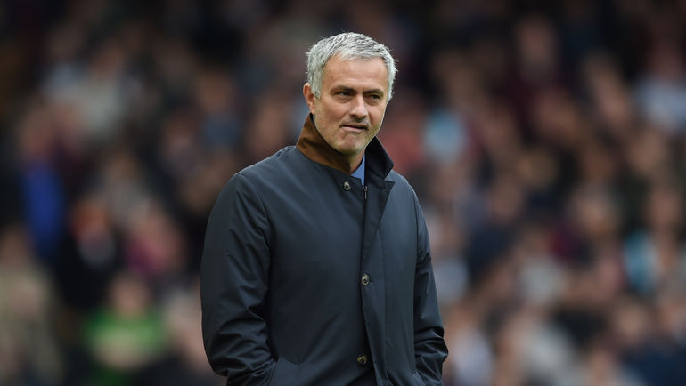
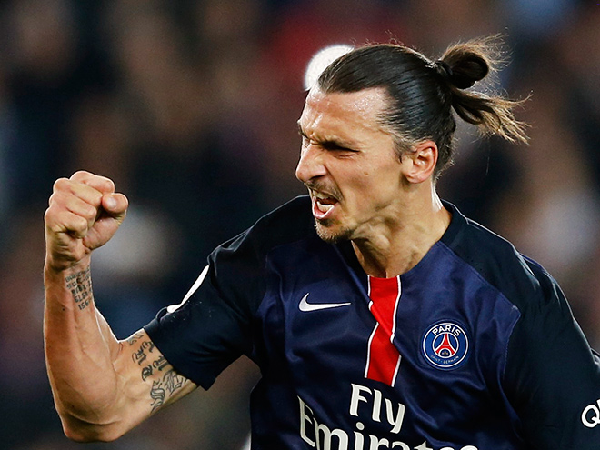
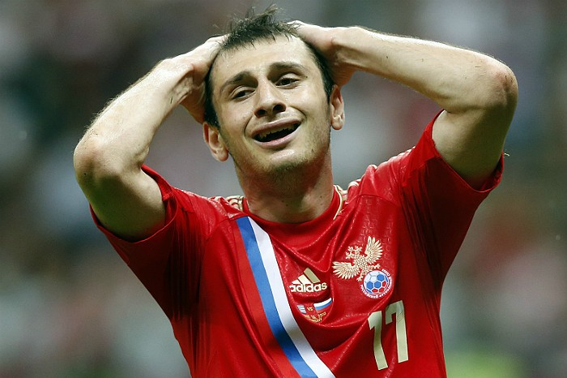
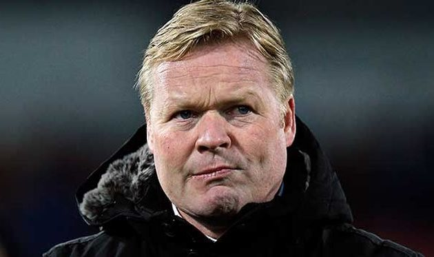
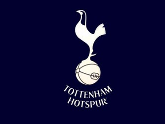

Моуринью: Джонс и Смоллинг выбыли надолго, по поводу Погба я ничего не знаю
Главный тренер «Манчестер Юнайтед» Жозе Моуринью рассказал о травмированных футболистах команды в преддверии матча с «Вест Бромвич Альбион» (1 апреля) в 30-м туре АПЛ.
«Вы сами знаете, что случилось с Джонсом и Смоллингом в сборной Англии. У нас ещё и Погба травмирован. Думаю, два английских парня выбыли надолго, а по поводу Погба я ничего не знаю.
Но это не важно. Нельзя плакаться или думать о тех, кто не может играть. Хотя у нас ещё и Эррера с Ибрагимовичем дисквалифицированы», — цитирует Моуринью Sky Sports.
31 марта 2017, пятница. 18:46. Football.News
Телеканал «РЕН ТВ» принёс извинения Тарасову и болельщикам «Локомотива»
Телеканал «РЕН ТВ» принёс извинения полузащитнику «Локомотива» Дмитрию Тарасову и болельщикам команды относительно комментария, который якобы дал телеканалу российский футболист.
Ранее «РЕН ТВ» опубликовал телефонную запись, на которой, как утверждается, Тарасов критикует игру сборной России в матче с командой Кот-д’Ивуара (0:2) и называет футболистов «лузерами» и «лохами», а также говорит: «Россия вообще играть не умеет. Фанаты должны на команду наезжать, чтобы они играли лучше». Позже Тарасов потребовал извинений и опровержения информации от первоисточника перед ним и сборной страны, утверждая, что футболистов сборной России оскорбил «Лжедмитрий», а не он, как ранее сообщил телеканал.
«Редакция „РЕН ТВ“ приносит свои извинения Дмитрию Тарасову (конечно же, истинному, а не тому любителю футбола, который отвечал от его имени на вопросы!), а также болельщикам ФК „Локомотив“ за ситуацию, которая произошла с комментарием об игре сборной. Нам действительно неприятно, что некий тёзка Тарасова, решивший заявить о себе за счёт известного футболиста, втянул нас в эту историю», — сообщается на сайте «РЕН ТВ».
31 марта 2017, пятница. 18:46. Football.News

Ибрагимович назвал себя Бенджамином Баттоном
Нападающий «Манчестер Юнайтед» Златан Ибрагимович опубликовал новую резонансную запись в «Инстаграме», выложив свою фотографию с заголовком «Бенджамин Баттон».
Бенджамин Баттон — персонаж фильма Дэвида Финчера и книги Фрэнсиса Скотта Фицджеральда. Это мужчина, который с каждым днём становился всё моложе.
35-летний Ибрагимович проводит очень хороший сезон. К этому моменту он отметился 26 голами и 9 результативными передачами в 41 матче. Его контракт с манкунианцами истекает летом.
31 марта 2017, пятница. 18:46. Football.News

Дзагоев из-за повреждения пропустит матч ЦСКА с «Крыльями Советов»
Полузащитник ЦСКА Алан Дзагоев, который получил повреждение в товарищеском матче сборной России с командой Бельгии (3:3), пропустит ближайший домашний матч 21-го тура РФПЛ с «Крыльями Советов», который состоится 2 апреля, сообщает пресс-служба столичного клуба.
Дзагоев, получивший повреждение задней поверхности бедра, ещё не вернулся в общую группу команды. Точные сроки восстановления хавбека пока не известны, но воскресную встречу он определённо пропустит.
Защитник Георгий Щенников, получивший сильный ушиб в товарищеском матче с тульским «Арсеналом» 30 марта, вернулся в общую группу и наравне со всеми готовится к игре. Точно не примет участия во встрече с «Крыльями» полузащитник Георги Миланов, который получил повреждение в расположении сборной Болгарии и, как сообщалось ранее, пропустит около месяца.
31 марта 2017, пятница. 18:46. Football.News

Куман: победный голод фанатов «Эвертона» в матчах с «Ливерпулем» только растёт
Главный тренер «Эвертона» Рональд Куман поделился ожиданиями от гостевого матча 30-го тура чемпионата Англии с «Ливерпулем», который состоится 1 апреля.
«Все знают о важности мерсисайдского дерби. На «Гудисон Парк» отличная атмосфера во время матчей против «Ливерпуля», но не лучшие результаты – это то, над чем мы работаем. Нужно хорошо подготовиться к субботнему матчу на «Энфилде». Это непросто, учитывая перерыв на матчи национальных сборных, но «Ливерпуль» находится в такой же ситуации.
Конечно, чувствуем от болельщиков, насколько сильно они хотят хорошего результата в этом матче. Последний раз «Эвертон» обыгрывал «Ливерпуль» очень давно, поэтому понятно, что победный голод наших болельщиков только растёт.
В мерсисайдских дерби нужно сохранять баланс игроков между горячностью и спокойствием. Не думаю, что футболисты перед такими матчами нуждаются в дополнительном эмоциональном заряде от тренера. В этом случае скорее нужно говорить о том, как контролировать эмоции, потому что красная карточка может всё усложнить», — цитирует Кумана пресс-служба «Эвертона».
В последний раз «Эвертон» побеждал «Ливерпуль» (2:0) на своём поле в октябре 2010 года, а последний успех «ирисок» на «Энфилде» (1:0) случился в сентябре 1999 года.
31 марта 2017, пятница. 18:46. Football.News

«Тоттенхэм» до конца апреля решит, будет ли играть на «Уэмбли» в сезоне-2017/18
«Тоттенхэм Хотспур» достиг договорённости с руководством стадиона «Уэмбли» о том, что до конца апреля клуб должен определиться по поводу того, проводить ли на арене домашние матчи в следующем сезоне, сообщает официальный сайт лондонцев.
Ранее «шпорам» разрешили провести на «Уэмбли» 27 домашних игр в сезоне-2017/18. В текущем сезоне лондонцы сыграли на главном стадионе Англии три матча в Лиге чемпионов и один — в Лиге Европы.
«Тоттенхэм» в настоящее время занимается строительством нового стадиона, на который команда планирует переехать в сезоне-2018/19.
31 марта 2017, пятница. 18:46. Football.News